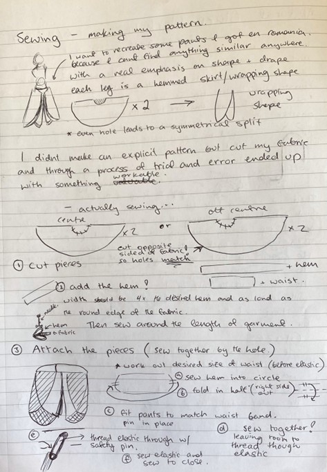

Blue/White Shorts
Documentation on creation of Blue/White Shorts

Materials
- I found a flowy shirt[1] at Save Mart and figured I could turn it into some funky shorts.
- The shirt was semi transparent so I also used some scrap from the duvet[2] as backing
- Elastic (bought from spotlight, need to find second hand elastic supply in the future)
- My 12 year old Bernina Sewing Machine and Thread.
Pattern
Notes
[1]: The shirt is not nearly as convenient as the duvet, I had to cut the shirt up and patchwork it onto the duvet backing, I took a painstaking amount of time to make each half of the shorts symmetrical so the patchwork seams would be even.
[2]: see SilverLeaf/WhiteWaffle Pants for image of duvet